Opis sprzętu · teardown · do konsultacji
Około 20 wyrejestrowanych drukarek fiskalnych w trybie tylko do odczytu. Szukam pomysłów, jak wykorzystać ich niefiskalne podzespoły (mechanizm druku, wyświetlacz, akumulator) z własną elektroniką — PC, Raspberry Pi, ESP32.
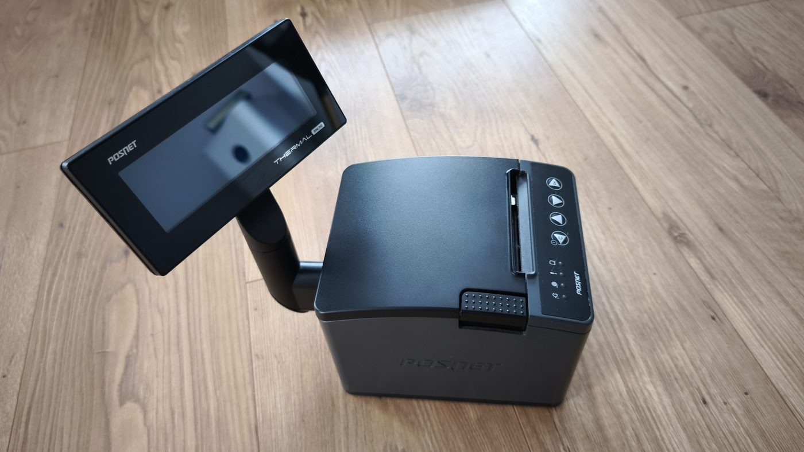
Mam około 20 egzemplarzy drukarki fiskalnej POSNET Thermal XL2 Online. Wszystkie są legalnie wyrejestrowane i działają w trybie tylko do odczytu — zgodnie z dokumentacją producenta w tym trybie sprzedaż i wydruki niefiskalne są zablokowane. Serwis POSNET oficjalnie informuje, że nic więcej się z nimi zrobić nie da, dlatego szukam alternatyw poza samą funkcją fiskalną.
Chcę wykorzystać samodzielne, niefiskalne komponenty do celów niepodatkowych (np. zwykłe wydruki termiczne z komputera lub mikrokontrolera). Część fiskalna — płyta główna, moduł pamięci fiskalnej i karta pamięci chronionej — zostaje nienaruszona i nie jest przedmiotem tych prób.
Z oficjalnej dokumentacji POSNET oraz odczytów ze zdjęć.
| Model | POSNET Thermal XL2 Online (drukarka fiskalna); ok. 20 szt. Egzemplarze na zdjęciach: rok prod. 2019 i 2021 |
| Zasilanie | 24 V DC ±10% z zewnętrznego zasilacza; pobór przy druku 24–120 W, spoczynkowo ~2,2 W |
| Mechanizm | Seiko CAPD247E-E (papier 57/58 mm, obcinacz) |
| Wyświetlacz klienta | moduł Winstar na rurce (DH0082 REV.0 / WDH0082-TMI-CT#06) |
| Złącza tylne | DC · USB (USB-B) · DRW (szuflada, RJ12) · COM1 (RS232, RJ45) · EXT (Ethernet) |
| Akumulator | MW Power MW 1.3-12 — VRLA/AGM 12 V, 1,3 Ah |
| Pamięci (fiskalne) | moduł pamięci fiskalnej + karta pamięci chronionej (SD) — poza zakresem przeróbki |
Na obudowie: DC, USB, DRW, COM1, EXT. Wg instrukcji POSNET odpowiadają kolejno: zasilanie, USB, szuflada (RJ12), port szeregowy RS232 (gniazdo typu RJ45) i Ethernet. Rozkład pinów szuflady i COM jest w instrukcji obsługi.
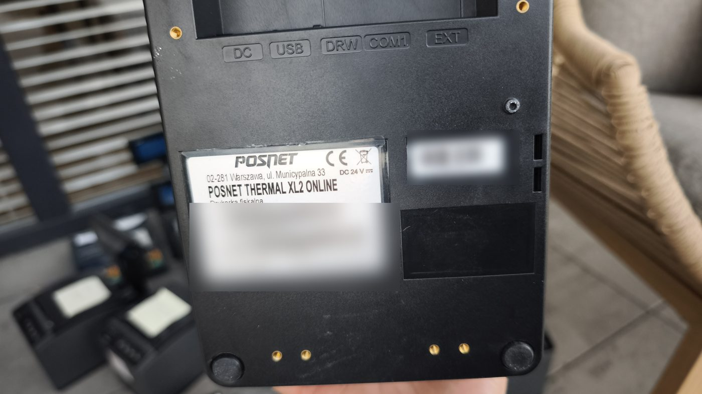
Najcenniejszy podzespół do ponownego użycia. Dane z karty produktu i katalogu Seiko Instruments.
| Technologia | termiczny druk liniowy, 432 punkty/linię, 8 pkt/mm (203 dpi) |
| Szer. druku / papieru | 54 mm / 58 mm |
| Prędkość | do 200 mm/s |
| Napięcia | logika 2,7–3,6 V lub 4,75–5,25 V; głowica i silniki 21,6–26,4 V |
| Silniki | krokowy wysuwu papieru + krokowy obcinacza |
| Obcinacz | nożycowy, cięcie pełne lub częściowe, ~0,5 s/cykl |
| Czujniki | termistor głowicy, przełącznik docisku wałka, transoptor końca papieru, transoptor pozycji noża |
Zamiast samemu sterować głowicą termiczną, Seiko oferuje gotowy kontroler do tej serii mechanizmów. To najprościej udokumentowana ścieżka, która zamienia sam mechanizm w zwykłą drukarkę niefiskalną:
Taki zestaw (mechanizm + IFD001) podłączysz do PC, Raspberry Pi albo mikrokontrolera przez RS-232. Dostępność płytki w Polsce warto sprawdzić u dystrybutora Seiko (np. CompArt).
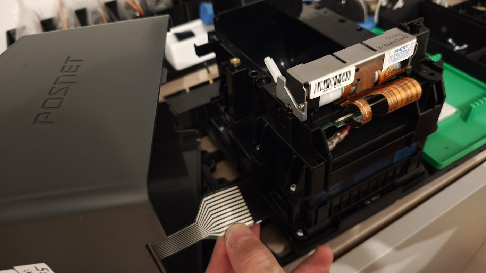
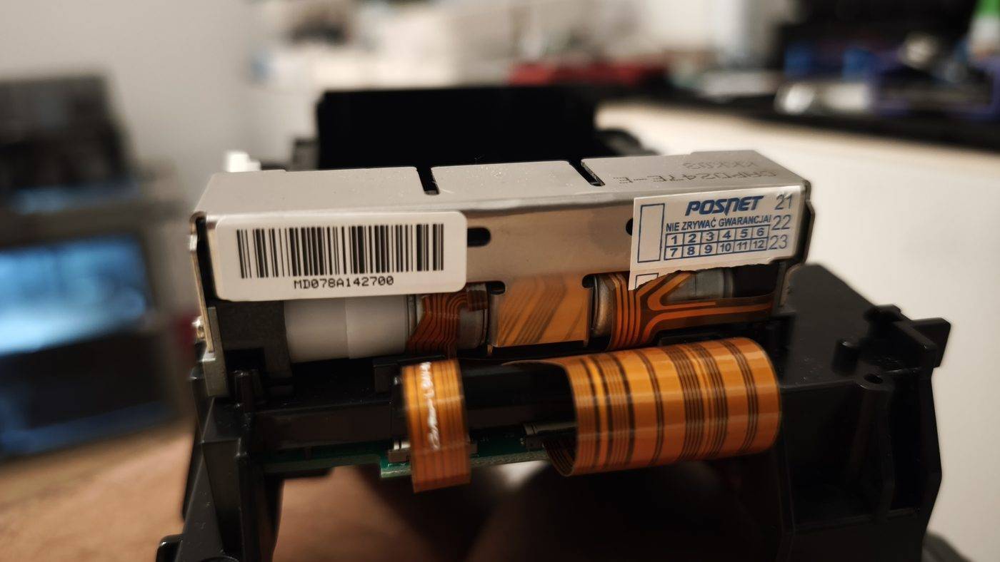
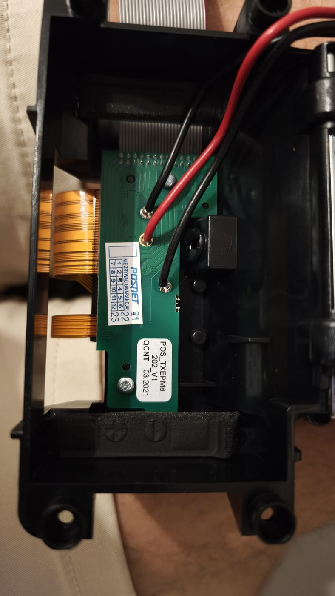
Żeby mechanizm drukował, potrzebuje sterownika. Dwie drogi: fabryczny Seiko IFD001 albo własna płytka (np. ESP32/RP2040). Poniżej fakty do oceny — nie przesądzam wyboru.
To znany typ projektu: sterowanie „gołą” głowicą termiczną. Schemat blokowy poniżej, a pod nim co trzeba zrobić i co bywa trudne:
Co trzeba zrobić i co bywa trudne:
| Głowica | 432 bity danych szeregowo (DI+CLK do 6 Mb/s), zatrzask LAT, stroby DST (CAPD247: 3 bloki po 144), termistor na ADC; energię stroba dobiera się do napięcia i temperatury |
| Zasilanie głowicy | Vp 21,6–26,4 V, prąd szczytowy do 2,61 A (144 pkt) / 5,23 A (288 pkt) — konieczne buforowanie |
| Silniki | 2× krokowy (wysuw ~0,44 A + obcinacz) → sterowniki typu DRV8825 / A4988 / TMC2209 |
| Czujniki | koniec papieru, pozycja noża (transoptory), docisk wałka (przełącznik) |
| MCU (opcje) | ESP32 (szybkie SPI, 2 rdzenie, stroby na RMT/timerach); RP2040 (PIO — deterministyczne taktowanie); STM32 |
| Najtrudniejsze | złącza FPC (50-pin drobny raster + 12-pin, np. Molex serii 54104), zarządzanie energią głowicy, layout szyny 24 V |
Koszt a sens: samo ESP32/RP2040 + sterowniki kroków to kilkadziesiąt zł, ale dochodzą zasilacz 24 V z zapasem, złącza FPC, PCB i czas strojenia. Przy 1 szt. oszczędność wobec IFD001 bywa pozorna; przy ~20 szt. własna płytka może się opłacić. Punkt wyjścia: publiczna nota interfejsu głowicy serii LTPDx47/CAPDx47 (sekcja Źródła).
Czy ktoś budował własny sterownik do głowicy Seiko CAPD/LTP tej klasy (ESP32/RP2040)? Jak rozwiązać złącza FPC i zarządzanie energią głowicy? Czy warto, czy prościej kupić IFD001?
Urządzenia są wyrejestrowane, po terminie legalizacji i nigdy nie wrócą do pracy fiskalnej — płyta jest moim sprzętem. Poniżej to, co widać na zdjęciach.
Realia przejęcia płyty: procesor na płycie fiskalnej ma niemal na pewno włączoną blokadę odczytu flasha (STM32 RDP), a płyta jest zbudowana pod jedno zadanie — to trudny i niepewny cel. Ten opis nie zawiera procedury przeprogramowania ani obchodzenia zabezpieczeń płyty: te same techniki działają na wciąż zarejestrowanych drukarkach tego modelu, więc są wrażliwe niezależnie od statusu tego egzemplarza. Do druku niefiskalnego prostsza i pewna droga to mechanizm + płytka Seiko IFD001 (sekcja 03), która nie wymaga ruszania płyty.
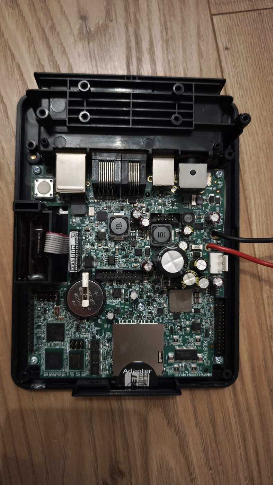
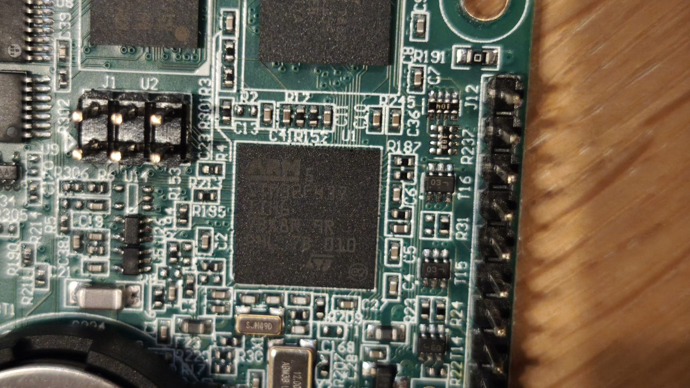
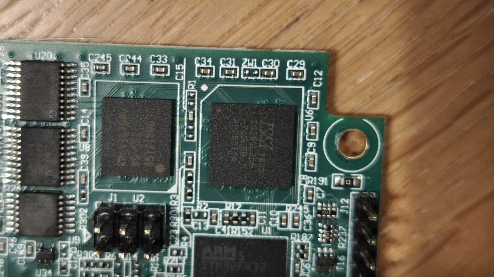
Moduł znakowy na płytce DH0082 REV.0 (naklejka WDH0082-TMI-CT#06), na rurce, podłączony przez płytkę THDWW1 ze złączem szpilkowym. Oficjalnej karty katalogowej Winstar dla tego oznaczenia nie znalazłem — wygląda na wykonanie pod zamówienie. Format 4×20 i kontroler (prawdopodobnie zgodny z HD44780) to na razie domysł do potwierdzenia pomiarem.
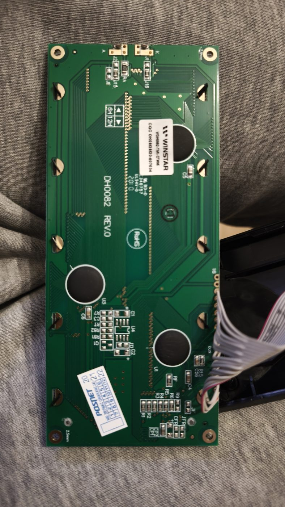
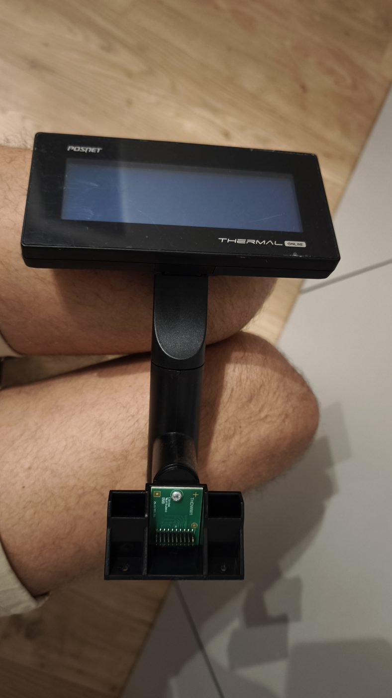
MW Power MW 1.3-12 — zwykły akumulator VRLA/AGM 12 V, 1,3 Ah, z konektorami płaskimi 4,8 mm. Sam w sobie nadaje się do dowolnego zastosowania 12 V o małym poborze (podtrzymanie, mały UPS).
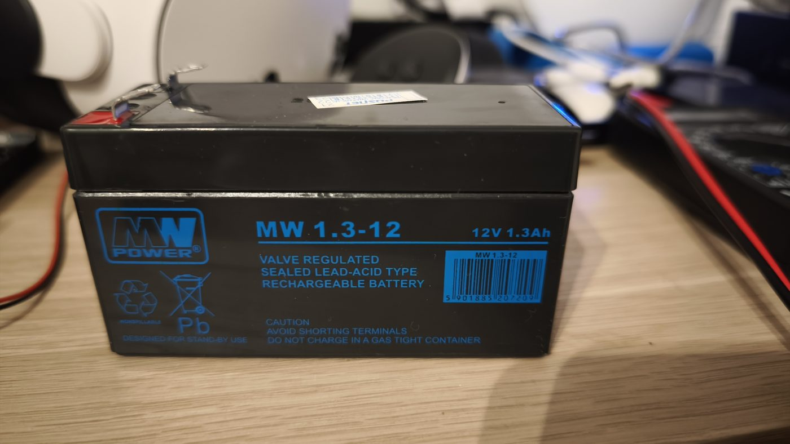
Jedyne elementy związane z zapisem fiskalnym. Zanim cokolwiek z nimi zrobisz, potwierdź u księgowego/US, czy i jak długo trzeba je przechowywać — i do tego czasu zachowaj w całości.
Płyta jest Twoja — ale to trudny cel (procesor z blokadą odczytu, konstrukcja pod jedno zadanie). Pewny efekt daje mechanizm + IFD001; przejmowanie płyty traktuj jako osobny, niepewny projekt.
Alternatywy wobec przeróbki: sprzedaż wyrejestrowanych urządzeń na części (serwisy kas kupują mechanizmy i wyświetlacze) — przy ok. 20 szt. hurtowa ilość bywa argumentem przy wycenie; a jeśli cel to tylko druk z Pi/ESP32 — nowa niefiskalna drukarka termiczna ESC/POS bywa tańsza i szybsza we wdrożeniu.